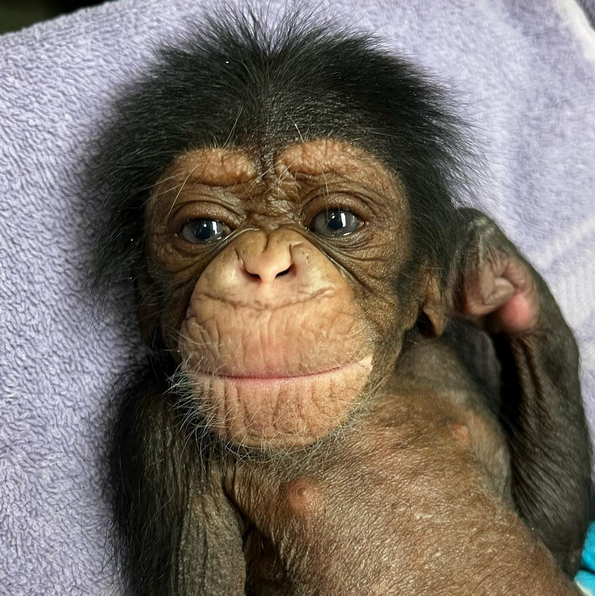

Somos Kawan e Weverton, profissionais formados em Educação Física, com paixão por promover qualidade de vida, bem-estar e desenvolvimento físico. Durante nossa formação, adquirimos conhecimentos sólidos em anatomia, fisiologia, treinamento funcional, musculação e práticas inclusivas.
Somos profissionais responsáveis, dedicados e organizados, com forte senso de ética e comprometimento em tudo o que fazemos. Acreditamos que a atividade física tem o poder de transformar vidas e construir caminhos mais saudáveis e equilibrados. Estamos preparados para atuar em escolas, academias, projetos sociais, clubes esportivos e com treinamento personalizado.
